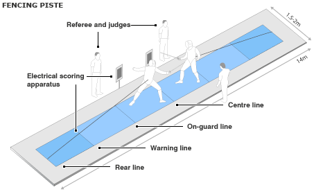

Equipment of Sabre
For the importance of protection to sabre fencers, the International Fencing Federation made some requirements to the equipment.
1. Mask

A sabre fencing musk is all electricfied, fencers can score by touching anyplace of the musk.

Inside a sabre musk, there are some cushion for decreasing the impact when fencing. The white part on top is made for preventing the musk to fall off. The grey part at the bottom protects the fencer's neck.

The musk covers the fencer's head and extends more at the back, this is for protecting the back of the fencer's head.
2. Clothing
Breech

Protects the lower body of the fencer.
Jacket

Protects the upper body of the fencer.
Lamé

Electricfied, Covers the fencer's upper body, when the oppenent hits on it, the scoring box will show a light.
Plastron

Not essential, but can give the fencer an additional protection to the major parts that are going to be hit by the opponent.
Fencing Socks

Protects the calves of the fencer, thicker than usual socks.
Glove

The darker part of the glove is electricfied, it's the valid target, the hand is not valid target. The glove is mde by thick material so as to protect the fencer's hand.
3. Fencing Piste

A fencing piste includes one center line, two on-guard lines, two warning lines and two rear lines. Two fencers start at two on-guard lines. When a fencer moves both legs over the rear line, he is out of the piste, the opponent gets a point. The wires behind the fencers are connected to the electrical scoring aparatus, they detects whether a fencer is hit and turns on a light to show the result. Usually there is only one judge, he stands at the side of the piste.
4. Sabre Sword

1 "Tip”·2 Steel blade·3 Bell guard·4 Electrical socket (electrical sabre only)·5 Handle / grip· 6 Insulating pommel
Sabre sword is an electricfied weapon, the whole sword with metal parts ("1" to "4") can touch the opponent and get a point on the scoring aparatus.